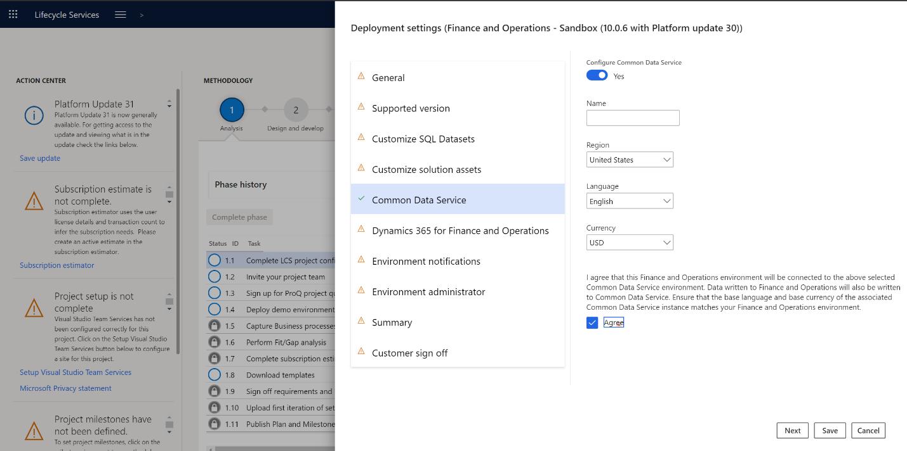
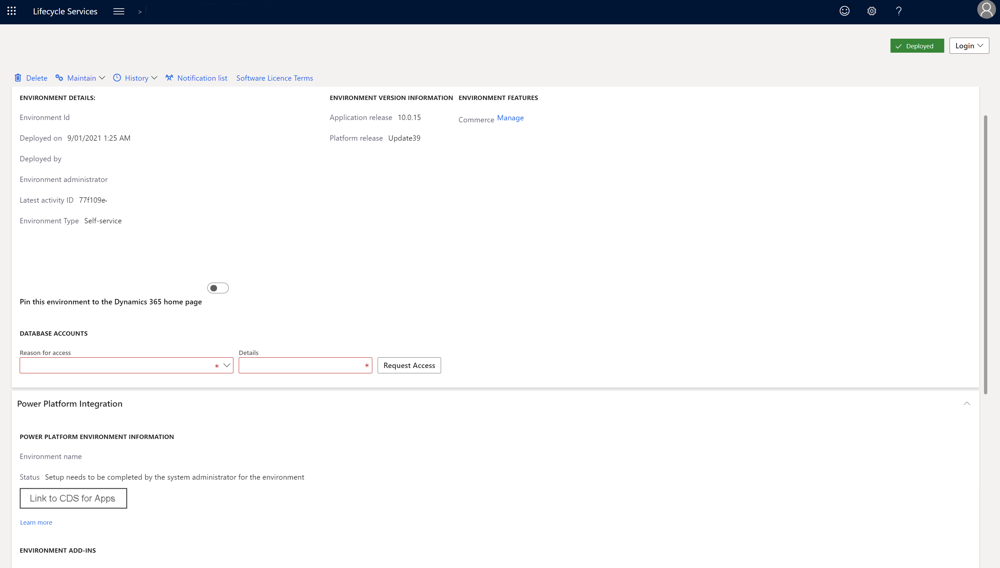

Dual-Schreiben von Lifecycle Services einrichten
[!include[banner](../../includes/banner.md)][!include[preview-banner](../../includes/preview-banner.md)][!include[rename-banner](~/includes/cc-data-platform-banner.md)]In diesem Thema wird erläutert, wie Sie eine Dual-Schreib-Verbindung zwischen einer neuen Finance and Operations Umgebung und einer neuen Dataverse Umgebung aus Microsoft Dynamics Lifecycle Services (LCS) einrichten.
Voraussetzungen
Sie müssen ein Administrator sein, um eine Dual-Schreib-Verbindung einzurichten.
- Sie müssen Zugriff auf den Mandant besitzen.
- Sie müssen in beiden Bereichen Administrator sein, in Finance and Operations Umgebungen und Dataverse Umgebungen.
Richten Sie eine Dual-Schreib-Verbindung ein
Folgen Sie diesen Schritten, um eine Dual-Schreib-Verbindung einzurichten.
In LCS gehen Sie zu Ihrem Projekt.
Wählen Sie Konfigurieren, um eine neue Umgebung bereitzustellen.
Wählen Sie die Version.
Wählen Sie die Topologie aus. Wenn nur eine Topologie verfügbar ist, wird diese automatisch ausgewählt.
Führen Sie die ersten Schritte im Assistent Bereitstellungseinstellungen aus.
Folgen Sie einem dieser Schritte auf der Registerkarte Dataverse:
Wenn eine Dataverse Umgebung bereits für Ihren Mandanten bereitgestellt ist, können sie sie auswählen.
- Legen Sie die Option Dataverse Konfigurieren auf Ja fest.
- In dem Feld Verfügbare Umgebungen wählen Sie im Feld die Umgebung aus, die in Ihre Finance and Operations Daten integriert werden soll. Die Liste enthält alle Umgebungen, in denen Sie über Administratorrechte verfügen.
- Wähle Sie das Kontrollkästchen Zustimmen, um anzuzeigen, dass Sie den Nutzungsbedingungen zustimmen.

Wenn Ihr Mandant noch keine Dataverse Umgebung hat, wird eine neue Umgebung bereitgestellt.
Legen Sie die Option Dataverse Konfigurieren auf Ja fest.
Einen Namen für die Dataverse Umgebung eingeben.
Wählen Sie die Region aus, in der die Umgebung bereitgestellt werden soll.
Wählen Sie die Standardsprache und -währung für die Umgebung aus.
Note
Sie können die Sprache und Währung später nicht mehr ändern.
Wähle Sie das Kontrollkästchen Zustimmen, um anzuzeigen, dass Sie den Nutzungsbedingungen zustimmen.

Führen Sie die verbleibenden Schritte im Assistent Bereitstellungseinstellungen aus.
Nachdem die Umgebung den Status Bereitgestellt hat, öffnen Sie die Seite mit den Umgebungsdetails. Der Abschnitt Dataverse Umgebungsinformationen zeigt die Namen der Finance and Operations Umgebung und die Dataverse Umgebung, die verknüpft sind.

Ein Administrator der Finance and Operations Umgebung muss sich bei LCS anmelden und Verknüpfung zu CDS für Apps auswählen, um den Link vervollständigen. Auf der Seite mit den Umgebungsdetails werden die Kontaktinformationen des Administrators angezeigt.
Nach Abschluss der Verknüpfung wird der Status auf Umgebungsverknüpfung erfolgreich abgeschlossen aktualisiert.
Zum Öffnen des Datenintegration Arbeitsbereichs in der Finance and Operations wählen Sie die Umgebung aus und steuern Sie die verfügbaren Vorlagen und wählen Sie Link zu CDS für Apps.
Note
Sie können die Verknüpfung von Umgebungen mit LCS nicht aufheben. Um die Verknüpfung einer Umgebung aufzuheben, öffnen Sie den Datenintegration Arbeitsbereich in der Finance and Operations Umgebung und wählen Sie dann Verknüpfung aufheben.